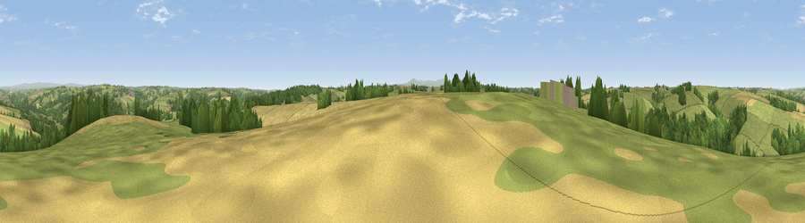

Viewpoint near Hollocombe
#17604 in England · top 26% of its area beats it · near HollocombeWhere it is
The exact computed spot (SS 65475 12375). Click the marker for map links.
The view, rendered

A 360° render of this exact spot computed from the terrain model, tree cover and land cover — summer colours, afternoon light, calibrated against photographs of famous viewpoints. Real trees, hedges and buildings will differ in detail.
The panorama
Grey silhouette: terrain skyline in each direction (720 bearings, Earth curvature and refraction included). Dashed green: skyline with trees (+15 m) and buildings (+8 m) as obstacles. Blue strip: how far the ground is visible on each bearing.
Where the view opens
Wedge length = distance to the farthest visible ground on that bearing (vegetation-aware). Rings at 10, 25 and 50 km.
What fills the view
59% grassland · 22% woodland · 19% cropland ·
Angular shares of the visible panorama (visual magnitude), not map area. Landscape diversity 0.43 (0–1 Shannon).
Key numbers
More beautiful places nearby
The staircase of upgrades: each row has a higher view potential than everything closer. Driving times are estimates from straight-line distance, calibrated against real road routing — check an actual route before setting out.
| Place | Direction | Drive | Score |
|---|---|---|---|
| Cadford Moors | S · 4 km | ~9 min | 63.9 |
| Viewpoint near Burrington | NNW · 6 km | ~13 min | 66.4 |
| Viewpoint near High Bullen | WNW · 16 km | ~28 min | 71.2 |
| Viewpoint near Landkey | NNW · 18 km | ~31 min | 74.0 |
| Codden Hill | NNW · 19 km | ~32 min | 81.3 |
| Viewpoint near Parkham | WNW · 29 km | ~46 min | 81.7 |
| Viewpoint near Bucks Mills | WNW · 30 km | ~47 min | 84.0 |
| Viewpoint near Martinhoe | N · 35 km | ~54 min | 86.5 |
50.89514, -3.91422 · source: screening · position refined by local search. Computed location — check access rights before visiting.